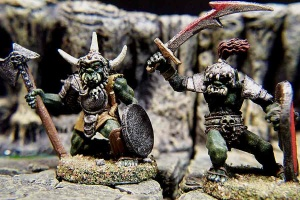

Home Page
F.A.Qs
Statistical Charts
Past Contests
Scheduled Contests
Award Contest
| Online Judge | Problem Set | Authors | Online Contests | User | ||||||
|---|---|---|---|---|---|---|---|---|---|---|
| Web Board Home Page F.A.Qs Statistical Charts | Current Contest Past Contests Scheduled Contests Award Contest | |||||||||
|
Language: Pesky Heroes
Description "Pesky Heroes!" -- the evil mage stormed into his throneroom — "They don't have respect for us evil masterminds anymore. They've gone and invaded my cave again, and while the traps were down for maintenance! And they've set up their camp in the cave! The nerve!"
"But, milord, then surely they will be doomed when the traps have been re-activated," were the last words of a servant, uttered milliseconds before he... well, you get the picture. "Not necessarily, I may have to teleport my trained orcs to seal their fate. You there, figure out where I should send them. Now!" Inspired by the fate of the last servant to speak, you hurry off with a map of the cave. The map is a complete map of the cave, with the positions of all traps marked, and you see that the cave has a single entrance. On the map, there are n strategic key points which have been marked with the numbers 1 to n. All passages in the cave connect two key points. All traps have been placed at key points, and all dead ends are key points. Your mathematically inclined mind quickly discovers that for every key point there are at most three passages connecting to it. Your master can open a magic gateway from the throneroom to any passage (but not to key points), and the trained orcs will be sent in. Despite their long training, the orcs are still not too bright. When they've gone through the gateway, they will begin walking away from the light coming from the entrance (there will always be a unique path from each point in the cave to the entrance). In each intersection, they will normally always choose the left path, and when they come back to the gateway, they will come back to the throneroom, ready to be teleported to a new location, if necessary. These orcs have been trained, so they're smarter than the average bear, erm, orc. You can give them a number t when they walk in, and the t:th time they are at an intersection, they will turn right instead of left. Despite their eight years of training, they can still only be trusted to remember one number until they return. "Oh, and one last thing. I saw the heroes in my crystal ball, they've set up camp in a dead-end.", the mage shouts after you. To maximize your chances of survival, you want your master to have to work as little as possible (i.e. to open as few gateways as possible), but you must have the orcs search every dead-end in the cave which can reach the entrance without passing any traps. The orcs are very dear to your master, so you better make sure they don't walk into any traps! Input The input will consist of several data sets. Each set will start with a line consisting of two numbers, n, m where 2 ≤ n ≤ 50000 is the number of key points on the map and 0 ≤ m ≤ 500 is the number of traps.
The next n lines will consist of 2 to 4 space-separated integers. Line i contains an integer ni, 1 ≤ ni ≤ 3, the number of passages connecting to key point i, followed by a list of the ni key points that the passages lead to, in clockwise order. The next m lines consist of single integers, the key points at which there are traps. Key points are labelled 1, ..., n and key point 1 is the (implicit) entrance to the outside world. Key point 1 is guaranteed to always have exactly one passage. The last case will be followed by a line with m = n = 0, which should not be processed. Output For each case, output the minimum number of gateways required, on a line by itself. Sample Input 5 1 1 2 3 1 4 3 1 2 2 2 5 1 4 3 4 1 1 2 2 1 3 2 2 4 1 3 4 0 0 Sample Output 1 0 Source |
[Submit] [Go Back] [Status] [Discuss]
All Rights Reserved 2003-2013 Ying Fuchen,Xu Pengcheng,Xie Di
Any problem, Please Contact Administrator